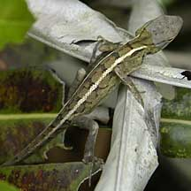
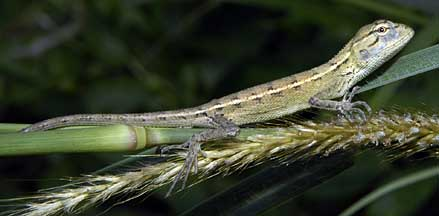
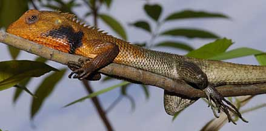
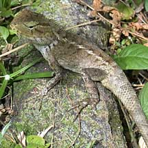

|
|
| vertebrates text index | photo index |
| Phylum Chordata > Subphylum Vertebrata > Class Reptilia |
| Changeable
lizard Calotes versicolor Family Agamidae updated Dec 2020 Where seen? This large sometimes brightly coloured lizard is commonly seen in our wild places including near mangroves and coastal vegetation. It is active during the day and is arboreal, found in bushes and trees. It is believed to have been introduced to Singapore possibly in the 1980's and has since spread almost everywhere, including in parks and urban areas. It is native to continental Asia up to the northern Peninsular Malaysia. In Singapore, it has displaced the Green crested lizard (Bronchodela cristatella) a native lizard which used to be commonly seen. Features: Total length to 37cm. A stout body with small, bumpy (keeled) scales. It has a spiny crest on the back of its neck and along the body. There are two spines above the ear opening. It has blackish streaks radiating from the eyes. Generally brownish to greenish yellow. |
 Sungei Buloh Wetland Reserve, May 03 |
 Pulau Ubin, Aug 03 |
|
 Males develop an orange head with black blotchy cheeks during breeding season. Sungei Buloh Wetland Reserve, Sep 04 |
 Sungei Buloh Wetland Reserve, Jan 02 |
|
| What does it eat? It eats insects
and even small lizards. Lizard babies: Adult males are larger with swollen cheeks. During the breeding season, males develop an orange head with a black blotch over the cheeks. They display to females and rivals by doing push ups and head bobs. For this reason, they are sometimes called 'Blood-sucking lizards', though of course, they do nothing of the sort. |
| Changeable lizards on Singapore shores |
On wildsingapore
flickr
|
|
Links
References
|